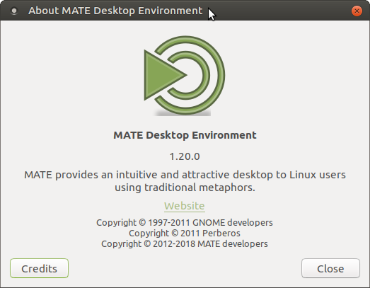

MATE 1.20 released
After 11 months of development the MATE Desktop team are pleased as punch to announce the release of MATE Desktop 1.20. We’d like to thank every MATE contributor for their help making this release possible.

What’s new in MATE 1.20
The theme for this release has been stabilising the MATE Desktop by replacing deprecated code and modernising large sections of the code base. We’ve also improved our window manager (Marco) and added support for HiDPI. Along the way we’ve fixed hundreds of bugs. Squished ‘em dead!
The headline changes in MATE Desktop 1.20 are:
-
MATE Desktop 1.20 supports HiDPI displays with dynamic detection and scaling.
- HiDPI hints for Qt applications are also pushed to the environment to improve cross toolkit integration.
- Toggling HiDPI modes triggers dynamic resize and scale, no log out/in required.
-
Marco now supports DRI3 and XPresent, if available.
- Frame rates in games are significantly increased when using Marco.
- Marco now supports drag to quadrant window tiling, cursor keys can be used to navigate the Alt + Tab switcher and keyboard shortcuts to move windows to another monitor were added.
- Support for Global Menu providers such as vala-panel-appmenu has been added.
- MATE Panel has much improved Status Notifier Items (SNI) support.
- Bookmarks now support GTK3+ locations.
- MATE Terminal now supports background images, adds Solarized themes and keybindings to switch tabs.
-
Atril, the document viewer, has had a massive overhaul and is better in every single way. Yes, all ways. Better!
- In particular accessibility support for visually impaired users is considerably improved.
- Caret navigation has been added.
- The Invest applet has been dropped from MATE Applets.
- The API, provided by Yahoo, has been discontinued and there is no reputable drop in replacement available.
- Panel applets now size correctly based on the units being displayed and many graphs are dynamically scaled.
- MATE Themes have seen significant improvements to fully implement all style classes exposed by GTK 3.22
- Engrampa, the archive viewer, has improved support for encrypted 7z archives.
- MATE Sensors Applet (finally) supports udisks2.
- OpenBSD authentication is supported in MATE Screensaver and minizip in Atril supports more BSD variants.
- Translations are updated. Thank you to our team of translators!
- A-n-d for distro maintainers we’ve bumped the minimum GTK3+ and GLib requirements.
- GTK 3.22 and GLib 2.50 or newer are required to build MATE Desktop 1.20.
- You might see some references to Wayland in the changelog below, don’t get too excited. It’s not what you think
:-)
The various components of MATE Desktop 1.20 are available for download here:
Changelog
Here are all the gory details.
mate-desktop 1.20.0
- Add gsettings for window scaling factor
- drop additional checks for min GLib version
- remove < gtk+-3.22 bits and bump required gtk+ version
- schema: drop can-change-accels key, won’t work with GTK+3
- WidthOfScreen and HeightOfScreen implementation
- drop
MateAboutDialog - mate-about: remove remains of libunique references
- mate-about: switch to
GtkAboutDialog - gtk 3.22: avoid deprecated
gdk_screen_get_monitorfunctions: - avoid deprecated
gdk_screen_get_width/height - mate-desktop-item: mate-about: avoid deprecated
gtk_show_uri - mate-about: avoid deprecated
gtk_show_uri - avoid deprecated
gdk_screen_get_n_monitors - avoid deprecated
gdk_screen_make_display_name - avoid deprecated
gdk_screen_get_number - Correct little imprecision in
man mate-about - Fix broken fallback cursor in
mate-colorsel.c - mate-colorsel: don’t use deprecated
GTK_STOCK_COLOR_PICKER - Add Global Menu support
- Translations update
mate-user-guide 1.20.0
- Translations update
libmatekbd 1.20.0
- remove < gtk+-3.22 bits and bump required gtk+
- WidthOfScreen and HeightOfScreen implementation
- matekbd-status: Fix Gdk-CRITICAL warning on creating status bar icon
- gtk 3.22: avoid deprecated
gdk_screen_get_monitorfunctions: - avoid deprecated
gdk_screen_get_width/height - avoid deprecated
gdk_screen_get_number - matekbd-indicator: Don’t expand
- matekbd-indicator: don’t use deprecated
gdk_cairo_create - Fix for strange GtkIconInfo behaviour
- matekbd-indicator: don’t use deprecated GtkAlignment
- keyboard-drawing: set css name matekbd-keyboard-drawing
- Slightly increase the font size for the key labels
- matekbd-keyboard-drawing: Don’t unset double buffering
- matekbd-keyboard-drawing: Handle
XkbGetKeyboard()failing - matekbd-keyboard-drawing: Prevent gtk+ keynav from taking focus away
- fix some introspection warnings
- show-layout.ui: don’t use deprecated widgets
- UI: expand kbdraw vertical
- Translations update
libmateweather 1.20.0
- locations: Add Radom, Poland
- Locations: add Zhukovsky airport (Moscow, Russia)
- Locations: fix Sheremetyevo airport name (Moscow, Russia)
- Add timeout, actully invalidate session in weather_info_abort
- Start reducing weather spam by creating intial cut of
weather_info_equal()function that will help apps determine if two WeatherInfo instances are ‘the same’ enough to not bother with a notification - remove warning on unused bsun by actually testing value
- Fix
soup_session_async_new()deprecation warning - Add missing Polish cities with airports
- Fix Novosibirsk timezone
- Add Ceiba in Puerto Rico
- doc: drop ancient MateConf references and some other stuff
- Update cities of Kazakhstan.
- actually check the
$GIO_REQUIREDvariable’s value - Translations update
mate-icon-theme 1.20.0
- Replace same broken flags
- Translations update
caja 1.20.0
- drop CSS for GTK+ 3.14
- Fix tasklist icon change when opening new tab
- Include local files with “” instead of <>
-
search_disposeandsearch_finilizecan’t be run after search finished - add missing window icon to About dialog for extensions
- move libegg to the top srcdir and drop some leftovers
- WidthOfScreen and HeightOfScreen implementation
- caja-places-sidebar: fix refusal to unmount when sidebar is wide
- caja-places-sidebar: disable overlay scrollbar
- Fix: wrong behavior with key “enter” while renaming files in list view
- open folder in new window: ctrl + shift + w
- zoom-control: change zoom with mousewheel scroll over button
- View -> Visible Columns: fix vertical expand of dialog content
- reword Size on Disk column description a bit
- Fix: wrong shift + del behavior while renaming files
- icon-dnd: remove hardcoded highlight frame
- Fix: high cpu while loading background image
- list view: fix large icon margins on zooming out
- make sure scaling the desktop wallpaper works in all monitors
- remove weird +x attribute from a source file
- gtk 3.22: avoid deprecated
gdk_screen_get_monitorfunctions: - Adds columns autosizing
- Refresh all rows on zoom change
- Forces widget redraw on zoom
- pathbar: enable mousewheel scrolling like it was with GTK+2
- libcaja-private: remove wrong link from internal README
- private: Ensure we allow launching .desktop files from trusted symlinks
- Fix: Scaling the desktop wallpaper doesn’t work
- open-with-dialog: set max-char-width for a label
- Fix “Open With” dialog “Open” button’s text misaligned
- avoid deprecated
gdk_screen_width/height - avoid deprecated
gdk_screen_get_width/height - avoid deprecated
gdk_screen_make_display_name - libegg: replace deprecated
gtk_drag_begin - eggsmclient: fix a build warning because of -Wcomment
- don’t use deprecated
gtk_show_uri - avoid deprecated
gdk_screen_get_number - Fix browsing/autorun media on insertion
- fix vertical Compact View scrolling in
fm_icon_view_scroll_event() - property-browser: add style class frame to scrolledwindows”
- Fix off-by-one error in
caja-pathbar.c - added feature: present the size on disk of files as we present the size of the file.
- restore DBus interface initialization
- CSS: Load a different caja-desktop.css with GTK 3.14
- Use gtk+-3 bookmarks location
- Open With dialog: force icon size
- file: make
caja_file_get_giconreturn custom icons too - Expand grid width to canvas
- use
atk_component_get_extentsinstead ofatk_component_get_position - don’t parse .hidden files manually - GIO does it since 2.36
- don’t check nonexistent
MATE22_USER_DIRenv var - don’t check nonexistent
~/.mate2directory - eel-accessibility: remove unused code and outdated comments
- show correct right-click menu after making selection
- eel: Queue resizes on the canvas as elements change visibility
- Add size_request to IconContainer to work around unncecessary relayouting
- IconCanvasItem: fix overlapping filenames on hover
- eel: remove unneeded #include with condition
- eel: remove some unused code from eel-gdk-pixbuf-extensions
- fix build warning (no const needed there)
- fix build with gcc 4.9.2 (looks like it’s in c89 mode by default)
- search: added tag support (xattr::xdg.tags).
- Fix broken rename in list view by selectin file name cell.
- property-browser: add style class frame to scrolledwindows
- caja-application.c: Fix uninitialized variable
- Translations update
mate-polkit 1.20.0
- drop polkitgtkmate library and its docs
- Fix reshow/hide icon with statusnotifier
- status-icon: don’t use stock icons
- polkitmateauthenticationdialog: avoid deprecated GtkAlignment
- polkitmateauthenticationdialog: replace a GTK_STOCK deprecation
- Translations update
marco 1.20.0
- build: drop unneeded pangoxft requirement
- Small bugfix for the move_to_X keybinds
- Bugfix for monitors of different sizes
- Restructured monitor keybinds and adjust
save_rect - Implemented simple shourtcuts to move window to another monitor
- schema: fix typos
- compositor: don’t try to paint window that is not viewable
- Fix wrong result in
meta_window_titlebar_is_onscreen()for windows without a frame - Add support for gtk3
_GTK_SHOW_WINDOW_MENUevent - More elegant solution for handling new move-to-workspace keybinds
- Implemented a setting to disable top tiling
- Implemented tabpopup when moving window to different workspace
- keybindings.c: Fix build warning:
- Reset tile_resized to false when fullscreening
- Fixes windows not going to
save_rectwhen unmaximimizing - Allow horizontal and vertical resizing when corner tiled
- Fixes window getting reset to saved_rect when untiling from corner
- Added keybindings for corner tiling
- Implemented simple corner tiling by mouse drag
- WidthOfScreen and HeightOfScreen implementation
- XFIXES regions are leaked during paint_windows
- Add stricter logic for running without XPresent support
- Make XPresent optional
- Add in some changes from xfwm4
- Cancel present_pending flag when erroring out
- XPresent extension support
- Store a window flag when user resizes from tiled
- Allow tiled windows to be resized horizontally
- gtk 3.22: avoid deprecated
gdk_screen_get_monitorfunctions: - avoid deprecated
gdk_screen_width/height - avoid deprecated
gdk_screen_get_width - display: don’t use deprecated
GDK_DEVICE_MANAGER - tools: remove marco-mag and marco-grayscaletools
- Fix synthetic keybinding/button-grab window
- Forces a window scale of 1 for the window manager, instead of using the default or user configured scale.
- avoid deprecated
gdk_display_get_screen - avoid deprecated
gdk_screen_get_number - Alt/tab - define arrow keycode + numpad arrows
- Allow use of arrows while in Alt + Tab popup
- ui: Fix invalid object construction in frames
- README: fix names of GSettings keys
- keybindings: remove uppercase from “current workspace”
- Added hotkey to rename current workspace
- fix code deprecations
- Translations update
mate-settings-daemon 1.20.0
- HiDPI: Load xsettings during initialization phase
- Add HiDPI configuration in XSettings
- Add support for HiDPI displays
- plugins:
G_GNUC_UNUSEDin unused but needed variables - xsettings: drop CanChangeAccels which won’t work with GTK+3
- msd-datetime-mechanism.c: Fix build warnings:
- msd-mpris-manager.c: Fix build warning:
- configure.ac: drop
GLIB_VERSION_MAX_ALLOWED - Translations update
mate-session-manager 1.20.0
- gsm-manager.c: Fix build warning:
- don’t lose focus when displaying logout or shutdown dialog
- add style class
logout-dialog - avoid deprecated
gdk_screen_make_display_name - don’t use deprecated
gtk_show_uri - avoid deprecated
gdk_screen_get_number - systemd user-session needs to be updated to get all user-defined enviroment when the session starts.
- dbus needs to be updated to get all user-defined environment when the session starts.
- Translations update
mate-menus 1.20.0
- bump gio version to 2.50.0
- make mate-applications-merged symlink
- Translations update
mate-panel 1.20.0
- Support panel auto-scaling for HiDPI displays
- bump minimum required libwnck version to 3.4.6
- status-notifier: don’t crash if tooltip has wrong type
- status-notifier: don’t crash if menu layout has wrong type
- Fix rendering of radio buttons in status notifier
- panel-run-dialog: fix segfault when program list is enabled
- get focus when displaying “applet broken” dialog
- Update workspace switcher properties dialog
- simplify some code
- rework the process of cancelling the background change operation
- status-notifier: properly handle the NULL case for items
- status-notifier: handle wrong-size icons called by path
- status-notifier: load icons specified by path
- Fix failures to load icons when the application calls for a path and not an icon name
- Fix build warning:
toplevel_configure_eventdefined but not used - Fix build warning:
GLIB_VERSION_MIN_REQUIREDredefined - status-notifier: fix failure to show icon for missing icon
- WidthOfScreen and HeightOfScreen implementation
- panel-toplevel: Remove pointer boundary check in
panel_toplevel_queue_auto_hide() - remove ancient gnome-panel leftovers
- Keep the right icons on bottom still displaying right when the resolution change larger
- wncklet: disconnect signals by data on destroy
- clock: disconnect one more signal handler on destroy
- panel-applet-frame-dbus-c: comment out newly unused variable
- Clock: don’t check variables that can never be < 0 for < 0
- panel-applet-frame-dbus.c: comment out never used code block
- panel-toplevel: remove duplicate break statement
- status-notifier: remove duplicate check found by cppcheck
- status-notifier: hide mate-polkit icon if passive
- Apply position fix on popup to GTK 3.20 and earlier
- GTK 3.22 status notifier: reposition menu when size changes
- GTK 3.22/status-notifer Fix menu position if size changed since last shown
- Stop panel collapse left on adding certain out-of-process applets
- make file/folder launchers work again
- panel-context-menu: Add confirmation dialog to panel reset option
- Add option to context menu to reset the panel
- clock:disconnect signal handlers on destroy
- Fix crashes on moving/removing applets with glib 2.53.4 or later
- gtk 3.22: avoid deprecated
gdk_screen_get_monitorfunctions: - Add a gsettings key to enable/disable SNI Support
- wncklet: stop segfaults, warnings on removing in-process switcher, window-list
- fish: fix adding back after removal
- Fish: stop all warnings on removing when built in-process
- Clock: fix removal warnings when in-process applet removed
- clock: stop segfault on removing applet when built in-process
- libmate-panel-applet: fix typos in id->factory_id rename
- libmate-panel-applet: Only declare
_panel_applet_shlib_factory()when needed - libmate-panel-applet: fix error in unregistering dbus object
- libmate-panel-applet: fix build warning
- libmate-panel-applet: fix introspection
- libmate-panel-applet: unown bus name and unregister dbus object
- libmate-panel-applet GTK 3.14/3.16: fix custom bg w alpha
- libmate-panel-applet: include dummy variable in factory for certian applets
- libmate-panel-applet: fix bg rendering for in-process applets
- libpanel-applet/panel-applet.h: Rename id to
factory_idfor factory - limatepanel-applet: add panel-applet-private.h
- don’t use GtkPlug/GtkSocket for in process applets
- make it possible to get applet widget
- libpanel-applet: add
panel_applet_factory_get_applet_widget - libpanel-applet: return process type and applet uid
- libpanel-applet: store factories in hash table
- libpanel-applet: delay GtkPlug creation
- libpanel-applet: add process type to private data
- libpanel-applet: Remove
out_processfrompanel_applet_factory_main() - avoid deprecated
gdk_screen_get_width/height - avoid deprecated
gdk_screen_get_n_monitors - fish: fix applet opening as thin line when built in-process
- Forces a window scale of 1 for the panel, instead of using the default or user configured scale.
- avoid deprecated
gdk_screen_make_display_name - avoid deprecated
gdk_display_get_screen - don’t use deprecated
gtk_show_uri - avoid deprecated
gdk_screen_get_number - fix applet crashes on transparent user-set panel bg
- system tray: fix hidden icons on image/transparent color BG
- Fix GTK theme image bg support on vertical panel
- Make panel image background in GTK theme work again
- clock: fix hovering over timezone text, causes panel to scale beyond screen limit
- GTK 3.18+ fix transparent default panel bg
- menu: restore focus after drag-n-dropping menuitem outside
- menu: restore focus after closing popup menu of a menuitem
- Fix: menubar/menu-button can’t launch mozo
- menu: remove incorrect code from the popup menu of a menuitem
- status notifier: follow same menu theme as rest of panel
- fix moving applets between panels
- menu: fix crash when some .desktop file has empty Icon field
- clock: properly handle visibility of edit button
- clock: drop deprecated
gtk_size_group_set_ignore_hidden - clock: move GtkButton in another horizontal GtkBox parent
- clock.c: drop deprecated
gtk_size_group_set_ignore_hidden - localized application’s name and description
- menu-button: disconnect from GSettings when applet is removed
- action-button: disconnect from GSettings when applet is removed
- remove a needless glib check
- status-notifier: fix crash on unknown signal name
- use GTK+3 bookmarks location for Places menu
- doc: remove some references to nonexistent stuff
- fix build with gcc 4.9.2 (looks like it’s in c89 mode by default)
- Run dialog: Add option to reverse history view
- Run dialog: Fix wrong history len with max size 1
- Run dialog: Allow changing history size
- doc: drop ancient MateConf references
- Run dialog: Fix wrong history order
- status-notifier: Do not hide passive items
- panel-menu-bar: fix build warning and some spacing
- properly fit expanded panel to smaller screen size
- system-tray: Properly propagate orientation changes
- notification-area: Fix item orientation
- workspace switcher: handle
GDK_SCROLL_SMOOTHand fix build warning - Reenable workspace switcher wrapping
- pre-bump version
- status-notifier: Fix handling of icon-padding style property
- Simplify panel description shown when switching panels with the WM
- status-notifier: Plug a memory leak
- remove deprecated
sys/timeb.hheader, as nothing uses it - status-notifier-watcher: Allow re-registration of registered items
- setup custom icon
- status-notifier: Plug a memory leak
- notification area: Fix memory leak sorting items
- Translations update
mate-backgrounds 1.20.0
- Drop ancient gnome leftovers
- Translations update
mate-themes 3.22.8 to 3.22.15
- Submarine themes: remove a box-shadow at engrampa toolbar
- submarine themes: remove padding from caja-sidebar treeview
- all themes caja: remove right-border from scrolledwindow.frame
- Menta metacity themes: remove left/right-border for maximised windows
- BlackMATE: write the border on scrollbar trough
- all themes: remove right-border from scrolledwindow.frame
- submarine themes: fix fg color of button.suggested-action in headerbars
- BlackMATE: Workaround for Yelp/Lireoffice/Firefox scrollbar issue
- Revert “Gtk+-3.20 all themes: fix redraw issue with yelp”
- TOK/TG: sliders: keep the original size
- Gtk+-3.20 submarine: reduce border radius for treeview.selected/hover in sidebars
- Gtk+-3.20 submarine: set font color for spinbutton entry
- Gtk+-3.20 submarine themes: fix a jumpin button in headerbar of gitg
- Gtk+-3.20 submarine themes: setup dnd for caja-icon-view
- Gtk+-3.20 T. themes: fix double border in mate-volume-control notebook
- Gtk+-3.20 Submarine themes: fix focus state of pluma-statusbar-button
- Gtk+-3.20 Most themes: style menuitem accelerator hover
- All themes: change syntax for loading panel-grid image for mate-1.20
- Gtk+-3.20 submarine themes: set top borderradius for .titlebar > headerbar
- Gtk+-3.20 Most Themes: fix padding of primary/secondary image in GtkEntry
- Gtk+-3.20 TRAD themes: fix color of grey-out arrows in menus
- TOK/TG: add menuitem radio mixed
- TOK/TG menuitems: checkboxes and radio buttons redesigned
- Gtk+-3.20 most themes: fix GtkScale slider mouse-selection if slider is out of range
- Gtk+-3.20 all themes: fix redraw issue with yelp
- Gtk+-3.20 GreenLaguna: some menu fixes
- Gtk+-3.20 Menta themes: add transition effect for menu arrows
- Gtk+-3.20 Menta themes: drop settings for firefox menus
- Gtk+-3.20 submarine themes: drop transition effect from labels
- Add index.theme file for gtk+ High Contrast theme
- Gtk+-3.20 Most themes: setup border for clockmap in clock applet
- Gtk+-3.20 Submarine themes: some fixes for clock applet
- Gtk+-3.20 BlackMate: some panel clock fixes
- TOK/TG: caja: solid color to the notebook header border
- Gtk+-3.20 Menta themes: use a hardcoded bg color for tooltips
- BlackMATE: CSD apps-match noncomposited headerbar to square window border
- BlackMATE: more CSD app fixes
- BlackMATE fixes for CSD apps
- Gtk+-3.20 Menta themes: change colors for panel applet buttons
- Gtk+-3.20 Menta themes: change transition timining for menubar menuitem
- Gtk+-3.20 Menta themes: use normal menubar menuitems styling for the panel
- Gtk+-3.20 Menta themes: remove transition effect from menuitems
- TOK/TG: mate-terminal: solid color to the notebook header border
- Gtk+-3.20 BlackMATE: fix fontcolor in url bar of google chrome
- Gtk+-3.20 BlackMATE: change menuitem accelerator font color
- TOK/TG: xfce4-terminal: solid color to the notebook header border
- TOK/TG: Remove gradient from notebook header
- cursor: add color-picker to make file
- Gtk+-3.20 Submarine themes: improve pluma sidebar
- Gtk+-3.20 submarine themes: fix fg color in pluma error dialogs
- BlackMATE: fully style noncomposited m-s-d OSD
- BlackMATE: support new msd-osd-window-solid style class for non-composited OSD case
- BlackMATE: make caja renaming labels more readable
- ContrastHighInverse: Fix Caja rename labels when theme actually applied
- cursor: add color-picker cursor image
- GTK+-3.20 submarine themes: improve mate- and mintmenu
- Gtk+-3.20 menta themes: fixes for mate- and mint-menu
- Gtk+-3.20 Traditional themes: improve some dialog windows
- Traditional themes: don’t draw a bg for mate-indicator-applet
- Gtk+-3.20 most themes: fix bg color in list-view of caja inactive-pane
- Gtk+-3.20 all themes: add new css name matekbd-keyboard-drawing
- metacity submarine themes: fix innerborder if metacity or compiz WM is used
- TOK/TG: xfce4-terminal: gradient color to the notebook header border
- TOK/TG: make padding in notebook tabs 2 pixels bigger
- menta-fix “{{” typo breaking gtk-widgets.css file
- All themes: Fix: print dialog paper depictions not appearing correctly
- Gtk+-3.20 Menta themes: don’t make any different between backdrop and normal state
- Gtk+-3.20 most themes: mate-panel hide button modification
- TOK/TG: caja: set gradient color to the notebook header border
- Gtk+-3.20 submarine themes: mate-panel hide button modifications
- TOK/TG: Fixes borders in xfce4-terminal tabs and probably more applications
- Gtk+-3.20 all themes: improvements for mate-menu
- Gtk+-3.20 all themes: better way to style keyboard layouts
- TOK/TG: mate-terminal: set gradient color to the notebook header border
- Gtk+-3.20 Traditional: set color to the notebook header border in mate-terminal
- Gtk+-3.20 Menta themes: sort mate-applications.css
- Menta themes: set color to the notebook header border
- TOK/TG: New colors in panel grid
- Gtk+-3.20 all themes: style mate-keyboard-layout-viewer
- Traditional themes - use applet handles from Menta
- TOK/TG: mate-terminal: use border in header tab instead notebook
- Gtk+-3.20 ContrastHighInverse: add missing assets to avoid a runtime warning
- Menta themes: eliminate wrong border-color for lockscreen
- Gtk+-3.20 submarine: eliminate wrong border-color for lockscreen
- GreenLaguna: correct notebook tab borders in mate-terminal
- Submarine themes: correct notebook tab borders in mate-terminal
- Gtk+-3.20 Menta themes: correct notebook header borders in mate-terminal
- Traditional themes: drop some lines in mate-terminal for a better look
- Gtk+-3.20 Most themes: don’t use a border for terminal notebook
- Traditional themes: print dialog improvements
- Traditional themes: set notebook borders for pavu-control (better fix)
- Traditional themes: set notebook borders for pavu-control
- Gtk+-3.20 GreenLaguna: style scrollbar junction
- Gtk+-3.20: add an annoying wildcard for firefox
- Gtk+-3.20 GreenLaguna: some border fixes for caja sidebar
- Gtk+-3.20 GreenLaguna: change border color of GtkSwitch
- Gtk+-3.20 GreenLaguna: change border-color for scrollbars
- GTK+-3.20 GreenLaguna: change insensitive_bg_color
- Gtk+-3.20 GreenLaguna: improve notebooks
- Traditional themes: drop the two useless lines in the notebooks
- Gtk+-3.20 GreenLaguna: re-work borders of frame and other improvements
- GreenLaguna metacity: increase border size
- Submarine metacity: increase border size
- Gtk+-3.20 Submarine: set color for dim-labels at list rows
- Traditional themes: set more border colors in checked notebook tabs
- Gtk+-3.20 submarine themes set a padding on statusbars
- Gtk+-3.20: fix jumping button in mate-font-viewer toolbar
- Gtk+-3.20 submarine themes: improve headerbars and popover menus
- Gtk+-3.20 submarine themes: set a padding for gedit statusbar
- Gtk+-3.20 Menta themes: add missing border-image for button.fat:checked in filezilla and atril
- Gtk+-3.20 Menta themes: some notebook improvements
- Fixed URL colors for Firefox search suggestions
- Gtk+-3.20 Menta themes: re-work borders for frames and other improvements (mega commit)
- Traditional themes: make padding in notebook tabs smaller
- Gtk+-3.20 submarine themes: several improvements
- Gtk+-3.22 Submarine themes: some notebook improvements
- Gtk+-3.22 Submarine themes: re-work borders for frames
- Gtk+-3.20 Submarine themes: fix previous commit for rubberband
- Gtk+-3.20 submarine themes: fix rubberband for mate-screenshot
- Gtk+-3.20 submarine themes: fix toolbar label color
- Traditional themes: use gradient color on active tabs
- Gtk+-2.0 Greenlaguna: use hardcoded hex colors in gtkrc
- Gtk+-2.0 most themes: use a oneliner for color definitions in gtkrc
- Traditional themes: add a border-image for some applets
- Gtk+-3.20 Traditional themes: use a border for the whole GtkInfobar
- Gtk+-3.20 Traditional themes: workaround, fix some borders in firefox
- Gtk+-3.20 Traditional themes: fix jumping combobox button
- Gtk+-3.20 most themes: fix sidebar of GtkAssistant
- Gtk+-3.20 Submarine themes: fix sidebar of GtkAssistant
- Gtk+-3 all themes: don’t set NaTrayApplet-icon-size
mate-notification-daemon 1.20.0
- WidthOfScreen and HeightOfScreen implementation
- gtk 3.22: avoid deprecated
gdk_screen_get_monitorfunctions: - avoid deprecated
gdk_screen_get_width/height - avoid deprecated
gdk_screen_get_n_monitors - Fixes high cpu usage with large timeouts
- unescape URI-encode paths for icon files
- Translations update
mate-control-center 1.20.0
- Scale font DPI for HiDPI displays
- Add support for HiDPI displays
- theme-installer.c: missing
g_object_unrefinmate_theme_install_real - theme-util.c: fix reinstalling the deleted theme can cause failure
- Support the theme compression package for installing XZ format
- drop unused variables
- eggcellrendererkeys.c: Fix build warnings:
- remove some leftovers related to MacOS support
- theme-thumbnail.c: Fix build warnings with
writeandpipe: - libslab: store search entry widget as
GtkEntry - libslab: fix search icon misaligned
- Translations update
mate-screensaver 1.20.0
- Add HiDPI support for lock screen
- gs-lock-plug.c: Fix build warning:
- WidthOfScreen and HeightOfScreen implementation
- restore the correct mate-screensaver-command manpage
- fix loop initial declarations
- Fix: idle slider display in all languages
- drop glib required max version
- avoid deprecated
gdk_screen_get_width/height - don’t use deprecated
gtk_show_uri - Implement OpenBSD authentication using
bsd_auth(3). - Bug Fix:
g_get_real_namewill never return NULL pointer - lock-dialog UI: avoid deprecated widgets
- Bug fix: screensaver and lock screen not correctly displayed in configurations with overlapping monitor geometries
- [GTK+3.20] Switch to GdkSeat
- Set input purpose for the password entry widget
- copy theme dialog: fix build warning about wrong variable type
- Translations update
mate-media 1.20.0
- gvc-applet: don’t try to increase refcount of a NULL object
- gvc-combo-box: fix signal arguments
- applet: restore icon for “Sound Preferences” menu item
- avoid deprecated
gdk_screen_get_height - applet: use GdkSeat with GTK+ >= 3.20
- applet: make keyboard work in popup
- gtk 3.22: avoid deprecated
gdk_screen_get_monitor… functions: - refresh tray icon on icon theme change
- mixer-dialog: remove style class .frame from a scrolledwindow
- volume-control-dialog: avoid deprecated GtkAlignment
- applet: show volume in popup even when muted
- applet: improve volume increments
- enable deprecation warnings by default
- Translations update
mate-power-manager 1.20.0
- avoid deprecated GtkStock
- inhibit: fix error that spammed logs from previous commit
- inhibit applet: fix rendering of icon
- WidthOfScreen and HeightOfScreen implementation
- fix typos in some more comments
- Correct spelling mistake.
- gtk 3.22: avoid deprecated
gdk_screen_get_monitorfunctions: - don’t abort on unknown DBus signal name
- avoid deprecated
gdk_screen_get_width/height - avoid deprecated
gdk_display_get_screen - don’t use deprecated
gtk_show_uri - refresh tray icon on icon theme change
- actually check the
$XPROTO_REQUIREDvariable’s value - statistics UI: add style class mpm-statistics
- Translations update
mate-system-monitor 1.20.0
- procman.cpp: Fix build warning: argument 1 null where non-null expected
- sysinfo.cpp: Fix build warning: this ‘if’ clause does not guard…
- proctable.cpp: Fix build warning: this ‘else’ clause does not guard…
- Fix system logo alignment
- WidthOfScreen and HeightOfScreen implementation
- process table: make search case-insensitive
- sysinfo: disable focus in all labels
- avoid deprecated
gdk_screen_width/height - sysinfo: avoid deprecated GtkAlignment
- Translations update
atril 1.20.0
- build: remove pre-GTK+3 option
- epub: make minizip support more BSD variants
- previewer: add style class atril-previewer-window
- WidthOfScreen and HeightOfScreen implementation
- shell: show caret navigation in menu
- ev-link-accessible: Improve efficiency of methods to get start and end indices
- Expose form fields as AtkObject children of the page
- Expose images as AtkObject children of the page
- Expose links as AtkObject children of the page
- ev-view-accessible: Add a method to determine if a given doc rect is showing
- ev-page-cache: Add method to check if a given page has been cached
- libview: Update the caret cursor when jumping to a find result
- libview: Update
ATK_STATE_SHOWINGwhen the visible page range changes - libview: Implement AtkComponent for pages
- libview: Fix shift+click text selection
- a11y: ensure text cached when you request an EvPageAccessible
- a11y: managing atk states on EvPageAccessible
- a11y: add if applies ATK_RELATION_FLOWS_TO/FROM on EvPageAccessible
- a11y: move AtkHyperText implementation from EvViewAccessible to EvPageAccessible
- a11y: move AtkText implementation from EvViewAccessible to EvPageAccessible
- a11y: expose EvPageAccessible as children of EvViewAccessible
- a11y: new EvPageAccessible
- libview: Fix some broken aspects EvViewAccessible text support
- libview: Take caret navigation into account when getting AtkHyperlink indices
- a11y: cleaning implementation for
atk_text_get_caret_offset - a11y: fixing implementation for
atk_text_set_caret_offset - view: set_caret_cursor_position should emit “cursor-moved” if applies
- Remove support for deprecated
atk_text_get_text_{before,after}_offset() - a11y: implement AtkDocument on EvViewAccessible
- a11y: with caret navigation enabled, accessibility current page is cursor page
- ev-view-accessible: call
document_changed_cbwhen setting the model - Some text fixes for caret message area
- ev-view-accessible: Fix a crash in
ev_view_accessible_get_link - ev-view-accessible: Clear the cached data when the current page
- shell: remove
view_actions_focus_out_cb - shell: Remove
ev_window_set_view_accels_sensitivity - shell: forward accels to the focused widget
- Use a global array for view accel action
- fix crash when selecting text in djvu documents
- shell: fix stock item for message area
- docs: libview: Re-add type builtins section
- Fix crashes of epub documents with caret-navigation
- Store the caret cursor position in document metadata
- libview: Add
ev_view_set_caret_cursor_position - libview: Update the current page also when pending scroll is to find a location
- libview: Do not schedule a redraw when enabling/disabling caret navigation
- libview: Stop caret cursor blinking when cursor is not in a visible page
- shell: Enable/disable the caret navigation with F7
- libview: Add
ev_view_supports_caret_navigation() - ev-link-accesible: Return the index/offset after the last character in the link
- help: Remove references to removed selection mode
- libview: Fix selections starting/ending in page margins
- libview: Reduce the pages to scan for selections
- libview: Remove unused rectangle selection mode
- libview: Rework ev_view_accessible_get_selection
- libview: do not redraw the whole view when caret cursor moves
- libview: Update the cursor area after positioning the cursor when moving between lines
- ev-view-accessible: Fix
ev_view_accesssible_get_n_selections - ev-view-accessibl: Fix get_caret_offset when the caret navigation is enabled
- libview: Use error bell and return early when moving between lines fails
- libview: do not schedule a resize in
ensure_rectangle_is_visible - libview: Stop the cursor blink when there are selections active
- libview: Deprecate ev_view_scroll in favor of
g_signal_emit_by_name - ev-window: Use g_signal_emit_by name instead of
ev_view_scroll - previewer: Remove scroll accelerators
- ev-window: Remove scroll accelerators
- libview: Add more scroll key bindings to EvView
- libview: Fix second parameter type of scroll signal for h, j, k and l bindings
- libview: Use merge_selection_region passing NULL to clear the selections
- ev-pixbuf-cache: Clear the selection region also when clearing the job selection
- ev-pixbuf-cache: fix the condition for when a new selection is needed
- ev-view-accessible: Rewrite get_run_attributes to return the text attributes from the document
- pdf: Implement
ev_document_text_get_text_attrs() - libview: Get text attributes from backend and save them in page cache
- libdocument: Add
ev_document_text_get_text_attrs() - libview: Emit the AtkText text-caret-moved and text-selection-changed signals
- libview: clear the selection when cursor is moved
- libview: Do not show the caret cursor when there are active selections
- libview: Return NULL instead of empty regions from the pixbuf cache
- libview: Don’t draw the caret cursor when the view is not focused
- libview: Fix moving caret cursor between lines in multicolumn documents
- libview: Pre-cache some prev/next pages to the current page range.
- ev-pixbuf-cache: schedule prev or next jobs first depending on the scroll direction
- ev-pixbuf-cache: Schedule jobs to render previous pages in inverse order
- libview: Added ‘cursor-moved’ signal to notify when the caret cursor has been moved.
- libview: Avoid unnecessary region copies when selecting text
- libview: Use a larger damage area to redraw selections
- libview: Don’t queue a redraw when damaged region hasn’t changed
- libview: Invalidate union of old and new selection
- libview: Move the caret cursor when clicking outside a selection
- libview: Remove unused in_selection member from SelectionInfo struct
- libview: Keep the offset inside a line when moving the caret between lines
- libview: Position the caret cursor at beginning/end of the line
- libview: Do not schedule a redraw when selecting all text
- libview: Use prepend + reverse instead of append to create selections list
- libview: Use GSlice to allocate EvViewSelection
- libview: Text selection using the caret cursor.
- libview: Update the caret cursor after selecting text with the mouse
- libview: Take page border into account when computing selections
- libview: Fix a crash when selecting more than one page
- libview: Make sure the cursor blinks after moving it by a click
- libview: merge
get_caret_cursor_rect_from_offsetandget_caret_cursor_area - libview: Notify about caret navigation errors using the error bell.
- libview: Do not redraw after a click if cursor position hasn’t changed
- libview: Use GtkBindings for caret navigation
- libview: Rename EvView::binding-activated signal as EvView::scroll
- libview: Position the caret cursor by clicking
- libview: Use
EvPixbufCacheto find selection region - libview: Split
ev_pixbuf_cache_get_selection_surfaceinto two functions - libview: Draw selection highlight from region
- libview: Fix the damage area used to redraw the caret cursor
- libview: Actually update the page when moving the care from a different page
- libview: Avoid to update the current page and scroll to the cursor position, if the caret cursor was not updated
- libview: Make caret cursor blink
- libview: Use logical attributes instead text layout to move the caret cursor
- libview: Add a way to get the text logical attributes from the page cache
- libview: Initial implementation of caret navigation
- libview: Refactor code for drawing page and selection surfaces
- shell: disable
ViewDualOddLeftin menus for epubs - libview: only access the relevant page cache for the height request
- Activate shortcut keys for dual and continuous layout
- ev-view: Forward key events to the focused form field
- Add shortcut keys for fit-page and fit-width options
- shell: Do not open single page pdfs in dual mode by default
- libview: Don’t update current_page to negative number
- libview: Make page layout a mode
- libview: Add new zoom mode that optimizes for readability
- Rename Fit Page Width as Fit Width
- Rename Best Fit mode as Fit Page
- Move dual page with odd pages left to the view menu
- libview: drop deprecated usage of gtk_container_set_resize_mode
- shell: Check if doc implements Annotations interface before cast
- Refreshing annotations’ sidebar upon deletion
- libdocument: Make
ev_mapping_list_removevoid - page-cache: Add flags parameter to
ev_page_cache_mark_dirty() - pdf: Reset the annotation mapping when there are no more annotations
- Add an option to remove annotations to the view popup menu
- libview: add ev_view_remove_annotation
- pdf: Implement remove_annotation virtual func
- libdocument: add ev_mapping_list_remove
- libdocument: Add remove_annotation to DocumentAnnotations.
- pdf: Make annotation names unique
- pdf: Add support for adding other types of annotations
- libview: Rename ev_view_set_focused_element and make it public internally
- Change the opacity of the annotation window
- Change color of annotation window
- libview: Grab focus for form fields and links on mouse press
- libdocument: Added
ev_mapping_list_get - pdf: Add activation link for Fields that have it.
- libview: Handle activation link of a Form Field if present
- libdocument: Add activation_link to EvFormField struct
- ev-properties-licence: don’t use deprecated GtkAlignment
- libview: : avoid deprecated gtk_adjustment_changed
- ev-job-find: mark two methods as skip
- ev-jobs: have
ev_job_failed_from_errorshadowev_job_failed - libview: add missing transfer and element-type annotations
- ev-mapping-list: make a boxed type
- libdocument: add missing transfer and element-type annotations
- gtk 3.22: avoid deprecated gdk_screen_get_monitor… functions:
- avoid
gdk_screen_get_primary_monitor/gdk_screen_get_monitor_scale_factor - ev-document-misc.c: avoid deprecated
gdk_screen_get_width/height_mm - dvi: Mitigate command injection attacks by quoting filename
- mdvi-lib: Fix compilation warning (const-correctness)
- libmisc: set width chars for page label
- libview: Scroll small pages in non-continuous mode
- libview: Enable
GDK_SMOOTH_SCROLLevents for view - libview: Ctrl+mouse wheel zoom should be pointer-centered, not window-centered
- ev-view: Add pan gesture to switch page
- ev-view: explicitly require a
GtkScrolledWindowas the parent widget - ev-view: Add pinch/zoom gesture to handle document zooming
- sidebar-thumbnails: fix unwanted move to start after fullscreen
- sidebar-thumbnails: preload one extra visible range while scrolling
- sidebar-thumbnails: keep thumbnails already rendered
- sidebar-thumbnails: fix clunky scrolling
- annotations-sidebar: Clean up the styling
- ev-annotation-window: Fix setting the color of the window border
- libview: fix annotation window focus change after creation
- libview: Fix focus on ev_annotation_window
- libview: Don’t change the font color of the annotation window
- shell: Use GdkRGBA for annotations
- libdocument: Add EvAnnotation API using GdkRGBA
- libdocument: Use the new deprecation macros
- Add deprecation macros
- fix runtime warnings caused by previous HDPI commit
- Take monitor scale factor into account when calculating zoom.
- Add hi-dpi support for main view.
- shell: Ditch gimpcellrenderertoggle
- sidebar-layers: Make it actually usable and fix a runtime warning
- libview: setting annotation window icons sizes
- libview: save changes to a dropdown in an embedded form
- libdocument: adjust rendering of shadow for active and inactive pages
- avoid deprecated
gdk_screen_make_display_name - ev-window: remove deprecated
GtkToolbar-shadow-type - annotation-properties-dialog: don’t use a headerbar
- avoid deprecated
gdk_display_get_screenandgdk_display_get_n_screens - ev-window: don’t use deprecated
gtk_show_uri - avoid deprecated
gdk_screen_get_number - build: properly clean the generated .caja-extension file
- build: require cairo >= 1.10.0 and drop some old code
- shell: remove unused code from utils
- ev-view: avoid deprecated
gtk_drag_begin - egg-editable-toolbar: avoid deprecated
gtk_drag_begin - message-area: replace some
GtkStockdeprecations - ev-sidebar: avoid deprecated
GTK_STOCK_CLOSEicon - password-view: replace some
GtkStockdeprecations - password-view: don’t use deprecated
GtkAlignment - toolbar-editor: don’t use deprecated
GtkAlignment - Translations update
caja-extensions 1.20.0
- xattr-tags: use better English in extension description
- po: add missing translatable strings from xattrs extension
- xattr-tags: fix extension description
- open-terminal: don’t use excessive string duplication
- avoid deprecated
gdk_screen_make_display_name - sendto burn: avoid deprecated
gtk_show_uri - xattr-tags: remove hack, it’s not needed now
- xattr-tags: fix typo causing undefined reference
- fix the
libcaja_gksu_la_LDFLAGSvariable declaration - xattr-tags: add missing newline to startup message
- xattr-tags: unescaping stored attributes.
- Translations update
engrampa 1.20.0
- build: use
PKG_CONFIGto fix cross-build - Add our copyright to About dialog and Caja extension
- 7z: Fix: rename files with password without the list encrypted
- 7z: Fix: delete/rename files/folders with the list encrypted
- avoid deprecated
gdk_screen_make_display_name - don’t use deprecated
gtk_show_uri - use a more common gtk+ function
- avoid deprecated
gdk_screen_get_number - Add the button “Show the Files and Quit” in the progress dialog
- Fix: create zip files in “maximum” compression level
- Fix: Browsing history not correct
- hide folders in “View All Files”
- Fix: Wrong behavior of Skip button in Replace file dialog
- UI files: avoid deprecations
- gtk-utils: remove some
GTK_STOCKdeprecations - gtk-utils: avoid deprecated gtk_icon_size_lookup_for_settings
- fr-window: fix some
GTK_STOCKdeprecations - add style class frame to scrolledwindows
- fr-window: avoid deprecated
GtkMiscandGtkAlignment - dlg-add-folder: avoid deprecated
gtk_alignment_new() - build: use variable instead of hardcoded file name when cleaning
- Translations update
eom 1.20.0
- drop CSS for GTK+ 3.18
- egg-editable-toolbar.c/egg-toolbars-model.c: drop unused variables
- print-preview: replace custom code with GDK function call
- gtk 3.22: avoid deprecated
gdk_screen_get_monitorfunctions: - don’t use deprecated
gtk_show_uri - avoid deprecated
gdk_screen_get_number - fix warning on closing empty window with multiple eom windows
- EomThumbView: Replace deprecated
gtk_menu_popupfunction - multiple-save-as-dialog.ui: avoid deprecated widgets
- error-message: replace usage of GtkStock
- A bunch of instrospection warning fixes
- EomScrollView: fix override_background deprecated call
- EomPropertiesDialog: Fix deprecation warnings
- EomThumbNav: Fix deprecated function warning
- EomScrollView: Replace deprecated
gtk_menu_popupfunction - EomScrollView: Switch from GtkDeviceManager to GdkSeat
- fix typo in function annotation
- use different css files for < gtk+=3.20
- EomWindow: Set file open dialog transient for its parent window
- settings: use rgb color definition as defaults
- UI: avoid using deprecaded widgets
- EomCloseConfirmationDialog: set max width chars for primary label
- EomCloseConfirmationDialog: Fix size request for the image list
- Printing paper orientation should default based on image dimensions
- Avoid recompressing JPEGs as PNG when printing
- EomFileChooser: Use MateThumbnailFactory to create preview image
- EomPropertiesDialog: Allow RGBA for transparent background color
- preferences-ui: drop usage of
MateColorButton - EomScrollView: Switch to
GdkRGBAfor background and transparent colors - EomPrintPreview: Avoid unnecessary color parsing
- Fix a few GtkStock deprecations
- EomCloseConfirmationDialog: replace deprecated
GTK_STOCK_DIALOG_WARNING - toolbar-editor: avoid deprecated GtkAlignment
- Bring eom-image.c’s SVG handling up to date, properly recognize svgz filetypes
- eom_uri_converter: GList leak fix
- Translations update
mate-applets 1.20.0
- multiload: Scaling network graph using thresholds defined by user
- multiload: fix tabs/spaces mix in more places
- multiload: fix spacing in some places
- multiload: remove some unneeded spaces
- weather: fix possible crash when opening prefs dialog
- drop broken invest-applet and all Python dependencies
- Fix build warnings: ignoring return value of
fgets, - command: bump range of interval
- WidthOfScreen and HeightOfScreen implementation
- build: when gtksourceview isn’t found, show this package name
- Cpufreq: Update tooltips with latest values
- Cpufreq: fix a build warning
- Cpufreq: stop jumping numbers moving units label
- Rounding error in draw corrected.
- cpufreq: fix calculating max width of frequency/unit/percent labels
- stickynotes: fix text selection
- cpufreq: refresh applet size on style change (e.g. font size)
- GSettings change recognized dynamically
- GSettings for checkmark color shown for mounted volumes.
- cpufreq: fix random invisibility of the applet
- Mounted drives will show a little bit different icon.
- gtk 3.22: avoid deprecated
gdk_screen_get_monitorfunctions: - Get rid of misleading_indentation and maybe-uninitialized warnings during build
- avoid deprecated
gdk_screen_width/height - avoid deprecated
gdk_screen_get_width/height - all applets: don’t use deprecated
gtk_show_uri - add new digital theme
- drivemount: fix a build warning
- cpufreq-prefs: don’t use deprecated
gtk_show_uri - bump libmateweather requirement to 1.19.1
- weather: If location changes, abort any outstanding weather updates
- weather: Added logic to not send notification if weather update is equal (as decided by
weather_info_equal()) to the previous update - avoid deprecated
gdk_screen_get_number - drivemount: If the list is empty, it will show media-floppy icon
- stickynotes: reword previous commit a bit and don’t leak dir name
- stickynotes: create parent dir for
stickynotes-applet.xmlif it does not exist. - Load graph scales automatically according to average load
- trashapplet: remove unused code
- cpufreq: set frequency on all cores
- Fix GError memory leak
- Fix for crasher in Command applet.
- Translations update
mate-calc 1.20.0
- Add icon image on close button in preferences dialog
- avoid deprecated GtkStock
- add missing window icon to About dialog
- math-window: don’t use deprecated
gtk_show_uri - Translations update
mate-icon-theme-faenza 1.20.0
- Change license to GPL3, as per the original project.
- Fix to use MATE logo for dark theme
mate-indicator-applet 1.20.0
- Support building against Ayatana Indicators and Ubuntu Indicators alike.
- Translations update
mate-netbook 1.20.0
- WidthOfScreen and HeightOfScreen implementation
- window picker: disconnect signal handlers in dispose function
- window picker: add icon to prefs dialog
- window picker: disable vertical expand of button in prefs dialog
- window picker: add icon for taskbar to About dialog
- maximus: don’t crash on invalid window ID
- Translations update
mate-sensors-applet 1.20.0
- build: enable udisk2 plugin again
- Remove deprecated udisks plugin
- udisks plugin: fix memory management for GValue variables
- Remove deprecated eee plugin
- Fix popup shower on removed HDD
- ibm-acpi.c: Fix build warning:
- eee-plugin.c: Fix build warning:
- active-sensor.c: Fix build warning:
- sensors-applet.c: Fix build warning:
- Fix indents
- Fix project cleanup
- Stop jumping applet as numbers change
- fix save order of sensors
- updated hide temperature units
- remove code duplication
- sensor-applet.c: replace deprecated GtkMisc
- sensor-applet.c: avoid deprecated
GTK_STOCK_MISSING_IMAGE - sensor-config-dialog: avoid deprecated GtkAlignment
- sensor-config-dialog: don’t use deprecated GtkColorButton
- prefs-dialog: add style class frame to scrolledwindow
- prefs-dialog: avoid deprecated GtkAlignment
- prefs-dialog: avoid deprecated
GTK_VBUTTON_BOX,GTK_TYPE_{H,V}BOX - use
GTK_ALIGN_CENTERfor thesensor_appletgrid - Translations update
mate-terminal 1.20.0
- require VTE 0.46
- screen: stop setting
TERMandCOLORTERMenvironment variables - schema: fix summary and description of some keys
- remove “…” from Find keyboard shortcut
- profile-editor: properly initialize the first palette color
- terminal-screen.c: drop unused variables
- Fix build warnings: ignoring return value of
chdir, - middle click on a tab: add the gsettings key to enable the feature
- make indent more uniform in a few files
- fix possible crash when handling DBus method call
- Spelling: Whitespace removed, in the terminal, Ctrl
- add Solarized themes from gnome-terminal
- WidthOfScreen and HeightOfScreen implementation
- add the ability to switch tabs using ctrl + tab and ctrl + shift + tab
- allow remapping “search” keyboard shortcuts
- Support background images with VTE3
- find-dialog.ui: fix keyboard selection
- avoid deprecated
vte_terminal_search_get_gregex - add “select all” keyboard shortcut: control + shift + A
- gtk 3.22: avoid deprecated
gdk_screen_get_monitorfunctions: - avoid deprecated
gdk_screen_get_width/height - avoid deprecated
gdk_screen_make_display_name - terminal-util: avoid
deprecated gtk_show_uri - avoid deprecated
gdk_display_get_screen - avoid deprecated
gdk_screen_get_number - Fix: Double click with right button causes Xorg to crash
- Translations update
mate-user-share 1.20.0
- build: use correct macros to fix cross-build
- don’t use deprecated
gtk_show_uri - Translations update
mate-utils 1.20.0
- Add screenshot support for HiDPI displays
- mate-screenshot: added New button
- screenshot-save.c: Fix build warnings with
pipewriteandread: - add style class logview-window
- Translations update
- WidthOfScreen and HeightOfScreen implementation
- baobab: make zoom with mousewheel work on chart
- screenshot: remove some unused code
- screenshot: don’t get window title as it’s not used later
- baobab/logview/dictionary: add our copyright to About dialog
- baobab: set transient parent for remote connect dialog
- baobab: don’t make prefs dialog visible in .ui file
- baobab: set parent window for About dialog
- avoid deprecated
gdk_screen_get_active_window - gtk 3.22: avoid deprecated
gdk_screen_get_monitorfunctions: - avoid deprecated
gdk_screen_width/height - avoid deprecated
gdk_screen_get_width/height - screenshot: avoid deprecated GdkDevice objects
- dictionary: avoid deprecated GdkDevice objects
- avoid deprecated
gdk_screen_get_n_monitors - avoid deprecated
gdk_screen_make_display_name - gdict-applet: don’t use deprecated
gtk_show_uri - don’t use deprecated
gtk_show_uri - avoid deprecated
gdk_screen_get_number - searchtool & logview: avoid deprecated GtkAlignment
- mate-screenshot: fix showing busy cursor when saving area screenshot
- screenshot: don’t translate the timestamp in the filename
- mate-dictionary: include correct header to fix occasional FTBFS
- Translations update
mozo 1.20.0
- Translations update
pluma 1.20.0
- put
peas_engine_enable_loaderin the correct place - Fix: make the list of recently used files working again
- drop unused variables
- pluma-spell-checker-language.c: Fix build warning:
- pluma.c: Fix build warning:
- pluma-document.c: Fix build warning:
- pluma-window: have GtkRecentData on stack instead of allocating it
- WidthOfScreen and HeightOfScreen implementation
- Fixes for regexp replacement with backreferences (e.g.
"\0") - pluma-view.c: use one static variable instead two to do the same job
- make sure pluma open in the same window of the workspace
- Fix: pluma closes tabs unexpectedly with [right + middle] click ctrl + + / ctrl + - using the numeric keypad
- add gsettings key: Show save confirmation if the files have changes
- Fix: wrong behavior holding down [middle + right] click ctrl + + / ctrl + - to increase/decrease font size
- don’t request to save documents with no changes
- add gsettings key to hide/show(default) tabs with the side pane
- Hide tabs if we are using the sidebar
- gtk 3.22: avoid deprecated
gdk_screen_get_monitorfunctions: - avoid deprecated
gdk_screen_get_width/height - avoid deprecated
gdk_screen_make_display_name - pluma-help: don’t use
deprecated gtk_show_uri - filebrowser: don’t use
deprecated gtk_show_uri - avoid deprecated
gdk_display_get_screenandgdk_screen_get_number - enable the abbility to save the document if it was changed externally
- disable the abbility to save the document if it has no changes
- print-preferences UI: fix some basic deprecations
- encoding-dialog UI: fix some basic deprecations
- preferences-dialog UI: fix some basic deprecations
- pluma-panel: remove deprecated GtkImage types
- plumal-panel: remove some GtkStock deprecations
- search-dialogs: fix a -Wpointer-compare warning
- tag-list-plugin: avoid deprecated GtkStock
- file-browser-widget: fix one stock deprecation
- configure: drop
GLIB_VERSION_MAX_ALLOWED - File browser: don’t use GIOScheduler (deprecated)
- file-browser-view: silent some build warnings
- pluma-view: avoid GtkStock deprecations
- pluma-tab: replace some GtkStock icons
- pluma-notebook: don’t use deprecated
gdk_cursor_new - progress-message-area: fix one GtkStock deprecation
- io-error-message-dialog: fix some GtkStock deprecation warnings
- Fix: pluma closes tabs unexpectedly with middle click
- pluma-notebook.c: fix a build warning
- double click to the right of the last open tab to open a new tab
- Support new location of gtk bookmarks file
- docs: we have encodings combobox, not option menu
- remove references to PlumaStatus
- docs: remove some references to nonexistent stuff
- filebrowser: don’t parse .hidden files - GIO does it since 2.36
- close confirm dialog: enable selection + disable focus in all labels
- close confirm dialog: set max width for labels
- fix typo in code comments
- fix running under wayland
- modelines: fix random crash on closing one of several Pluma windows
- Translations update
python-caja 1.20.0
- Translations update